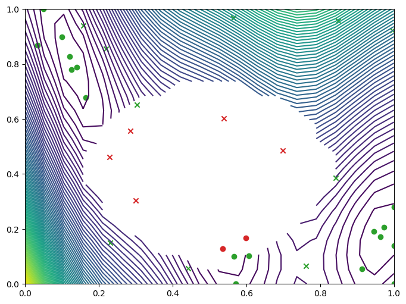
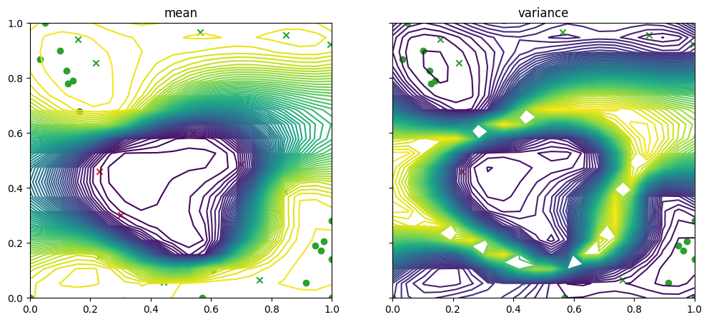

Failure regions#
[1]:
from __future__ import annotations
import numpy as np
import tensorflow as tf
np.random.seed(1234)
tf.random.set_seed(1234)
The problem#
This notebook is similar to the EI notebook, where we look to find the minimum value of the two-dimensional Branin function over the hypercube \([0, 1]^2\). But here, we constrain the problem, by adding an area to the search space in which the objective fails to evaluate.
We represent this setup with a function masked_branin that produces null values when evaluated in the disk with center \((0.5, 0.4)\) and radius \(0.3\). It’s important to remember that while we know where this failure region is, this function is a black box from the optimizer’s point of view: the optimizer must learn it.
[2]:
import trieste
def masked_branin(x):
mask_nan = np.sqrt((x[:, 0] - 0.5) ** 2 + (x[:, 1] - 0.4) ** 2) < 0.3
y = np.array(trieste.objectives.Branin.objective(x))
y[mask_nan] = np.nan
return tf.convert_to_tensor(y.reshape(-1, 1), x.dtype)
2026-06-17 13:59:23,936 INFO util.py:154 -- Missing packages: ['ipywidgets']. Run `pip install -U ipywidgets`, then restart the notebook server for rich notebook output.
As mentioned, we’ll search over the hypercube \([0, 1]^2\) …
[3]:
from trieste.space import Box
search_space = Box([0, 0], [1, 1])
… where the masked_branin now looks as follows. The white area in the centre shows the failure region.
[4]:
from trieste.experimental.plotting import plot_function_plotly
fig = plot_function_plotly(
masked_branin, search_space.lower, search_space.upper
)
fig.show()
Data type cannot be displayed: application/vnd.plotly.v1+json
Define the data sets#
We’ll work with two data sets
one containing only those query_points and observations where the observations are finite. We’ll label this with
OBJECTIVE.the other containing all the query points, but whose observations indicate if evaluating the observer failed at that point, using
0if the evaluation failed, else1. We’ll label this withFAILURE.
Let’s define an observer that outputs the data in these formats.
[5]:
OBJECTIVE = "OBJECTIVE"
FAILURE = "FAILURE"
def observer(x):
y = masked_branin(x)
mask = np.isfinite(y).reshape(-1)
return {
OBJECTIVE: trieste.data.Dataset(x[mask], y[mask]),
FAILURE: trieste.data.Dataset(x, tf.cast(np.isfinite(y), tf.float64)),
}
We can evaluate the observer at points sampled from the search space.
[6]:
num_init_points = 15
initial_data = observer(search_space.sample(num_init_points))
Build GPflow models#
We’ll model the data on the objective with a regression model, and the data on which points failed with a classification model. The regression model will be a GaussianProcessRegression wrapping a GPflow GPR model, and the classification model a VariationalGaussianProcess wrapping a GPflow VGP model with Bernoulli likelihood. The GPR and VGP models are build using Trieste’s convenient model build functions build_gpr and build_vgp_classifier. Note that we set the
likelihood variance to a small number because we are dealing with a noise-free problem.
[7]:
from trieste.models.gpflow import build_gpr, build_vgp_classifier
regression_model = build_gpr(
initial_data[OBJECTIVE], search_space, likelihood_variance=1e-7
)
classification_model = build_vgp_classifier(
initial_data[FAILURE], search_space, noise_free=True
)
Build Trieste models#
We now specify how Trieste will use our GPflow models within the BO loop.
For our VGP model we will use a non-default optimization: alternate Adam steps (to optimize kernel parameter) and NatGrad steps (to optimize variational parameters). For this we need to use the BatchOptimizer wrapper and set the use_natgrads model argument to True in our VariationalGaussianProcess model wrapper.
We’ll train the GPR model with the default Scipy-based L-BFGS optimizer, and the VGP model with the custom algorithm above.
[8]:
from gpflow.keras import tf_keras
from trieste.models import TrainableProbabilisticModel
from trieste.models.gpflow.models import (
GaussianProcessRegression,
VariationalGaussianProcess,
)
from trieste.models.optimizer import BatchOptimizer
from trieste.types import Tag
models: dict[Tag, TrainableProbabilisticModel] = {
OBJECTIVE: GaussianProcessRegression(regression_model),
FAILURE: VariationalGaussianProcess(
classification_model,
BatchOptimizer(tf_keras.optimizers.Adam(1e-3)),
use_natgrads=True,
),
}
Create a custom acquisition function#
We’ll need a custom acquisition function for this problem. This function is the product of the expected improvement for the objective data and the predictive mean for the failure data. We can specify which data and model to use in each acquisition function builder with the OBJECTIVE and FAILURE labels. We’ll optimize the function using EfficientGlobalOptimization.
[9]:
from trieste.acquisition.rule import EfficientGlobalOptimization
from trieste.acquisition import (
SingleModelAcquisitionBuilder,
ExpectedImprovement,
Product,
)
class ProbabilityOfValidity(SingleModelAcquisitionBuilder):
def prepare_acquisition_function(self, model, dataset=None):
def acquisition(at):
mean, _ = model.predict_y(tf.squeeze(at, -2))
return mean
return acquisition
ei = ExpectedImprovement()
pov = ProbabilityOfValidity()
acq_fn = Product(ei.using(OBJECTIVE), pov.using(FAILURE))
rule = EfficientGlobalOptimization(acq_fn) # type: ignore
Run the optimizer#
Now, we run the Bayesian optimization loop for twenty steps, and print the location of the query point corresponding to the minimum observation.
[10]:
bo = trieste.bayesian_optimizer.BayesianOptimizer(observer, search_space)
num_steps = 20
result = bo.optimize(
num_steps, initial_data, models, rule
).final_result.unwrap()
arg_min_idx = tf.squeeze(
tf.argmin(result.datasets[OBJECTIVE].observations, axis=0)
)
print(f"query point: {result.datasets[OBJECTIVE].query_points[arg_min_idx, :]}")
Optimization completed without errors
query point: [0.96267202 0.17098899]
We can visualise where the optimizer queried on a contour plot of the Branin with the failure region. The minimum observation can be seen along the bottom axis towards the right, outside of the failure region.
[11]:
import matplotlib.pyplot as plt
from trieste.experimental.plotting import (
plot_gp_2d,
plot_function_2d,
plot_bo_points,
)
mask_fail = (
result.datasets[FAILURE].observations.numpy().flatten().astype(int) == 0
)
fig, ax = plot_function_2d(
masked_branin,
search_space.lower,
search_space.upper,
grid_density=20,
contour=True,
)
plot_bo_points(
result.datasets[FAILURE].query_points.numpy(),
ax=ax[0, 0],
num_init=num_init_points,
mask_fail=mask_fail,
)
plt.show()

We can also plot the mean and variance of the predictive distribution over the search space, first for the objective data and model …
[12]:
from trieste.experimental.plotting import (
plot_model_predictions_plotly,
add_bo_points_plotly,
)
arg_min_idx = tf.squeeze(
tf.argmin(result.datasets[OBJECTIVE].observations, axis=0)
)
fig = plot_model_predictions_plotly(
result.models[OBJECTIVE],
search_space.lower,
search_space.upper,
)
fig = add_bo_points_plotly(
x=result.datasets[OBJECTIVE].query_points[:, 0].numpy(),
y=result.datasets[OBJECTIVE].query_points[:, 1].numpy(),
z=result.datasets[OBJECTIVE].observations.numpy().flatten(),
num_init=num_init_points,
idx_best=arg_min_idx,
fig=fig,
figrow=1,
figcol=1,
)
fig.show()
Data type cannot be displayed: application/vnd.plotly.v1+json
… and then for the failure data and model
[13]:
fig, ax = plot_gp_2d(
result.models[FAILURE].model,
search_space.lower,
search_space.upper,
grid_density=20,
contour=True,
figsize=(12, 5),
predict_y=True,
)
plot_bo_points(
result.datasets[FAILURE].query_points.numpy(),
num_init=num_init_points,
ax=ax[0, 0],
mask_fail=mask_fail,
)
plot_bo_points(
result.datasets[FAILURE].query_points.numpy(),
num_init=num_init_points,
ax=ax[0, 1],
mask_fail=mask_fail,
)
plt.show()
